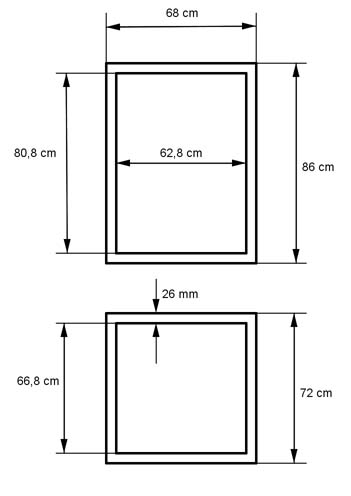

Aufgabe 158 Ein Holzkasten ist außen 68 cm breit, 72 cm lang und 86 cm hoch. Wie viel m3 Holz braucht man für 30 rundum geschlossene Kästen, wenn die Wände 26 mm dick sind und 12% Schnittverlust entsteht?

Volumen eines Kastens: 26 mm = 2,6 cm V = 2 * Boden + 2 * Seite 1 + 2 * Seite 2 V = 2 * 72 cm * 68 cm * 2,6 cm + + (2 * 66, 8 cm * 80,8 cm + + 2 * 68 cm * 80,8 cm) * 2,6 cm V = 25 459 cm2 + (10 794 cm2 + 10 988 cm2)*2,6 cm V = 25 459 cm3 + 56 633 cm3 = = 82 092 cm3 = 0,082 m3 V30 = 30 * 0,082 m3 = 2,46 m3 Unter Berücksichtigung des Schnittverlustes. Verhältnisgleichung. 2,46 m3 : 88% = x : 100% Inneres Produkt = äußeres Produkt x * 88% = 2,46 m3 * 100% |:88% x = 2,795 m3